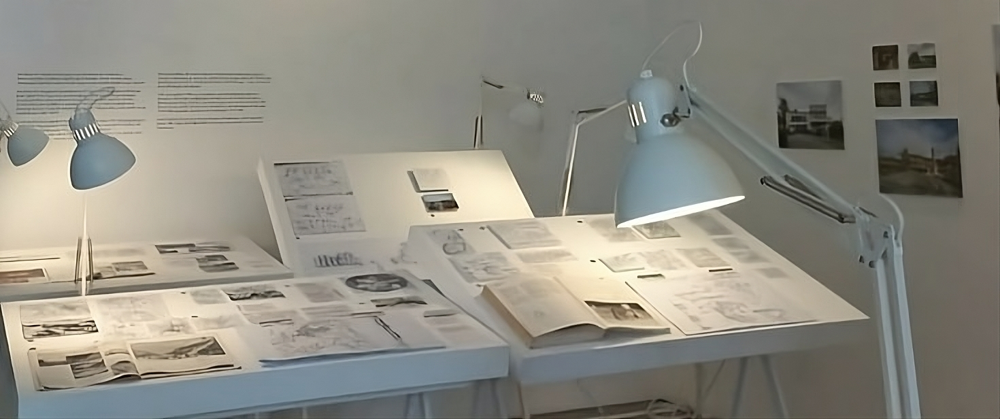
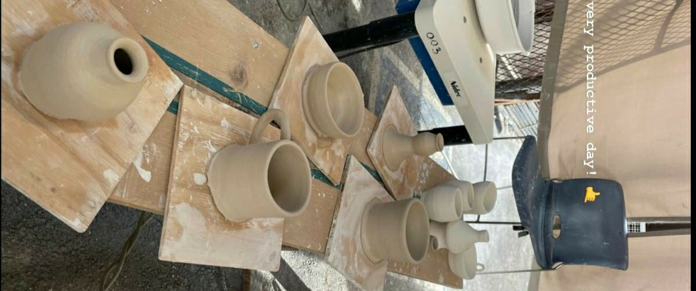
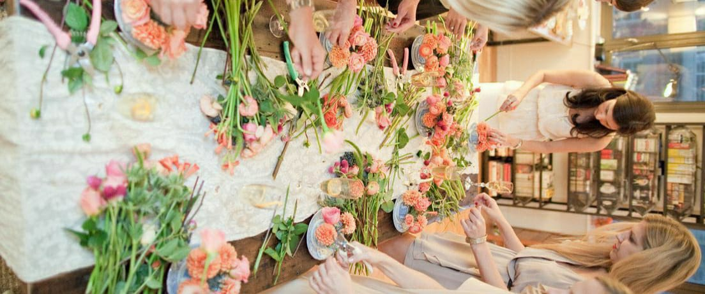
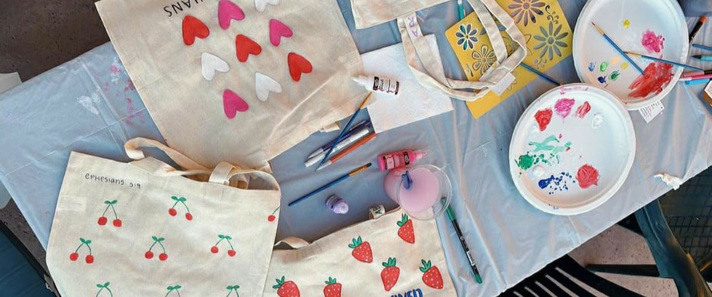

Ruang Studio
Ruang studio adalah tempat di mana kreativitas merajut benang imajinasi menjadi karya nyata. Baik seorang seniman, penulis, atau fotografer. Dimana, ruang studio menjadi tempat yang memberikan kebebasan untuk berkreasi tanpa batas, yaitu menciptakan lingkungan yang mendukung inspirasi dan produktivitas, serta menjadi tempat yang benar-benar mewakili identitas dan gaya kreatif seseorang.
Dalam perjalanan menuju karya-karya luar biasa, ruang studio mendukung eksplorasi kreatif, seperti kelas pottery, arraging flower dan painting. Dengan menggabungkan aspek-aspek ini, ruang studio dapat menjadi tempat di mana imajinasi dapat berkembang dan karya-karya luar biasa dapat lahir.
Pottery
Seni keramik atau pottery telah menjadi bagian integral dari sejarah manusia selama ribuan tahun. Dengan menggunakan tanah liat sebagai bahan dasar, para seniman dan pengrajin telah menciptakan karya-karya indah yang mencerminkan keahlian teknis serta ekspresi kreatif mereka. Proses pembuatan keramik dimulai dari pemilihan tanah liat yang tepat, diikuti oleh pencampuran, pemodelan, pengukiran, dan pengecatan, serta tahap bakar dalam kiln yang menjadikan karya akhir tahan lama. Dari barang-barang fungsional seperti vas, piring, dan cangkir, hingga karya seni murni berupa patung dan lukisan keramik, pottery menawarkan beragam cara bagi seniman untuk berkomunikasi dengan pengamatnya, mengabadikan kreativitas, dan memelihara warisan seni yang kaya.
Selain nilai estetika dan sejarahnya, seni keramik juga memiliki pengaruh positif terhadap kesejahteraan mental dan emosional. Proses pembuatan pottery memerlukan konsentrasi yang mendalam dan keterampilan tangan yang halus, menciptakan pengalaman meditatif yang dapat membantu mengurangi stres dan meningkatkan fokus. Bagi banyak individu, bermain dengan tanah liat dan membentuknya menjadi bentuk-bentuk yang unik bisa menjadi bentuk ekspresi diri yang memuaskan. Kursus keramik dan lokakarya juga memberi peluang kepada orang-orang untuk berinteraksi dengan komunitas seniman lainnya, berbagi pengetahuan, dan bersama-sama merayakan keindahan karya mereka. Dalam dunia modern yang serba cepat, pottery memberikan ruang untuk melambat, merenung, dan menghasilkan sesuatu yang autentik dan bermakna melalui sentuhan tangan dan kreativitas.
Arraging Flower
Seni menata bunga, atau yang dikenal juga sebagai flower arranging, adalah cara yang indah untuk menggabungkan elemen alami ke dalam ruang kita. Dengan menggunakan berbagai jenis bunga, daun, dan aksesori dekoratif, seni ini mampu menciptakan tampilan yang memikat dan penuh makna. Tidak hanya tentang meletakkan bunga di dalam vas, tetapi juga tentang memahami harmoni warna, tekstur, dan bentuk untuk menciptakan aransemen yang menggambarkan keindahan alam dalam wujud yang mengagumkan.
Menata bunga bukan hanya sekadar tugas estetika, tetapi juga merupakan wujud ekspresi kreatif. Setiap tata letak bunga mencerminkan sentuhan pribadi dan gaya individu yang merangkulnya. Proses mencari kombinasi bunga yang cocok dan merancang komposisi visual yang memukau dapat menjadi meditasi kreatif yang memicu imajinasi. Dengan memilih bunga berdasarkan musim atau tema tertentu, dapat menghadirkan cerita atau perasaan tertentu melalui tatanan bunga yang mencerminkan mood atau suasana hati.
Painting
Seni lukis adalah menghubungkan seniman dengan penonton melalui warna, bentuk, dan emosi. Dari cat air hingga minyak, dan dari realisme hingga abstrak, seni lukis memiliki beragam gaya dan teknik yang memungkinkan seniman untuk mengungkapkan diri secara unik. Lukisan bukan hanya tentang menciptakan gambar visual, tetapi juga tentang menceritakan kisah, merangkul perasaan, dan meresapi keindahan dunia melalui mata dan sentuhan seniman.
Setiap lukisan memiliki cerita di baliknya. Proses menciptakan karya seni dimulai dari momen inspirasi yang muncul dari sekitar atau dari dalam diri seniman. Dari situ, seniman merencanakan komposisi, memilih palet warna yang sesuai, dan memutuskan teknik yang akan digunakan. Goresan-goresan kuas yang hati-hati diterapkan membangun detail dan tekstur, sedangkan kombinasi warna menciptakan harmoni visual. Proses kreatif ini penuh dengan refleksi, eksperimen, dan serangkaian keputusan yang mengarah pada penciptaan lukisan yang tak terlupakan.
Melalui seni lukis, seniman dapat mengungkapkan emosi, pandangan dunia, dan bahkan menceritakan kisah-kisah yang sulit diungkapkan dengan kata-kata. Lukisan juga memiliki kekuatan untuk menghubungkan orang dengan pengalaman dan perasaan bersama, menciptakan resonansi yang mendalam di antara penonton. Karya seni lukis dapat menginspirasi, memprovokasi pemikiran, atau sederhana saja memberikan kebahagiaan visual. Tidak hanya itu, seni lukis juga memberikan kepuasan batin bagi seniman itu sendiri, memungkinkan mereka merayakan ekspresi kreatif dan keberanian untuk berbagi dunia batin mereka.